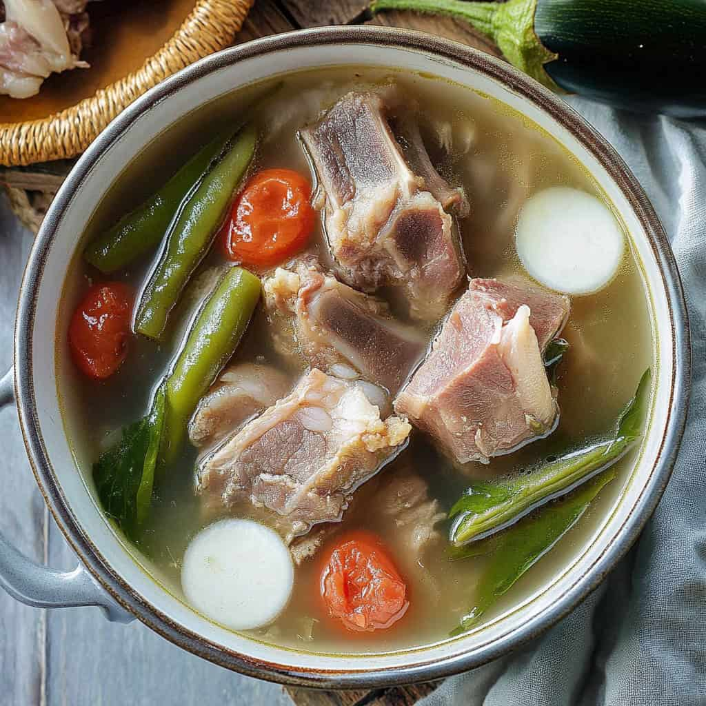
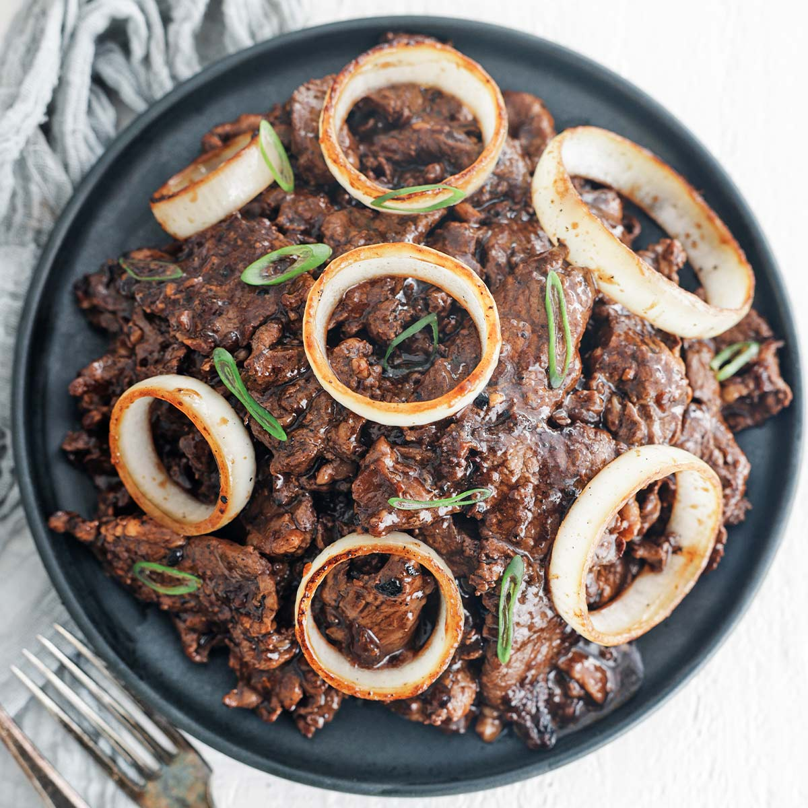

Chicken Adobo

Chicken slices cooked in soy sauce and vinegar with garlic. This is a delicious Filipino chicken dish that you can eat for lunch with warm white rice.
Sinigang
Sinigang is a sour soup native to the Philippines. This recipe uses pork as the main ingredient. Other proteins and seafood can also be used. Beef, shrimp, fish are commonly used to cook sinigang.
Kare-kare

Kare Kare is a traditional Filipino stew complimented with a thick savory peanut sauce. The commonly used meats for this dish are ox tail, tripe, and pork leg; on some occasions goat and chicken meat are also used. Besides the peanuts, this dish depends on the shrimp paste (on the side) in order to be fully enjoyed. Traditionally, “palayok” (clay cooking pot) is used to cook this dish and it is also used as the serving pot.
Tinola
Chicken Tinola is a Filipino soup dish. It involves cooking chicken pieces in ginger broth. It is a popular cold weather dish. I always feel warm and cozy every time I eat it. This Filipino Chicken Soup is best enjoyed with fish sauce as dipping sauce, and a cup of warm white rice.
Menudo
Pork Menudo is the number one on the list of my comfort foods and it’s hard for me to last a month without trying one…literally. Some would say that I am addicted to this food while others would use the term “obsession”, I just simply look at it as a necessity – a basic necessity that I cannot live without.
Bistek Tagalog
Bistek Tagalog is a type of Filipino beef stew. This is also known as beef steak to some people. It is comprised of thin slices of beef and a generous amount of onions. These are stewed in a soy sauce and lemon juice mixture until the beef gets very tender. It is best enjoyed with warm rice.